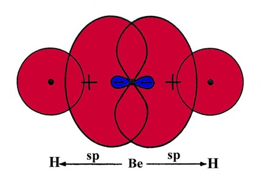
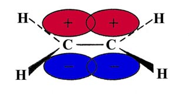
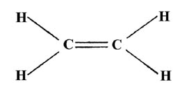
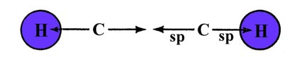
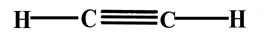
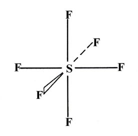

|
 |
 |
 |
An Introduction to the Electronic Structure of Atoms and MoleculesProfessor of Chemistry / McMaster University / Hamilton, Ontario
|
The theory of valency which we have been developing is known as valence
bond theory. One further feature of this theory is that it may
be used to predict (or in some cases, rationalize) the observed geometries
of molecules By the geometry of a molecule we mean the relative arrangement
of the nuclei in three-dimensional space. For example, assuming the two
O—H bonds in the water molecule to be similar and hence of the same length,
the angle formed by the two O—H bonds (the HOH angle could conceivably
posess any angle from 180° to some relatively small value. All we demand
of our simple theory is that it correctly predict whether the water molecule
is linear (bond angle = 180°) or bent (bond angle less than 180°)
Or as another example, it should predict whether the ammonia molecule is
planar (a) or pyramidal (b).
|
|
|
The observed geometry of a molecule is that which makes the energy of the system a minimum. Thus those geometries will be favoured which (i) concentrate the largest amount of charge density in the binding region and thus give the strongest individual bonds, and (ii) keep the nuclei as far apart as possible (consistent with (i)), and hence reduce the nuclear replusions. Consider again the two possibilities for the water molecule It is clear that the linear form (a) will have a smaller energy of nuclear repulsion from the hydrogens than will the bent form (b).
The overlap of the orbitals is shown schematically in Fig. 6-16.
The actual bond angle in the water molecule is 104.5°. The opening of the angle to a value greater than the predicted one of 90° can be accounted for in terms of a lessening of the repulsion between the hydrogen nuclei. The assumption we have made is that the maximum amount of electron density will be transferred to the binding region and hence yield the strongest possible bond when the hydrogen and oxygen nuclei lie on the axis which is defined by the direction of the 2p orbital. For a given internuclear separation, this will result in the maximum overlap of the orbitals. Because an orbital with l ¹ 0 restricts the motion of the electron to certain preferred directions in space, bond angles and molecular geometry will be determined, to a first rough approximation, by the inter-orbital angles.
In the valence bond description of ammonia, each N—H bond results from the overlap of an H 1s orbital with a 2p orbital on N. All three 2p orbitals on N have a vacancy and thus three bonds should be formed and each HNH angle should be 90°, i.e., ammonia should be a pyramidal and not a planar molecule. The NH3 molecule is indeed pyramidal and the observed HNH angle is 107.3°. The actual bond angle is again larger than that predicted by the theory.
It might be argued that since the N atom possesses a half-filled 2p shell (its electronic configuration is 1s22s22p3), its density distribution is spherical and hence the N atom should not exhibit any directional preferences in its bonding. This argument is incorrect for the following reason. The density distribution is obtained by squaring the wave function. The wave function which properly describes the system must be obtained first, then squared to obtain the density. The wave function which describes the ammonia molecule consists of products of hydrogen 1s orbital functions with the nitrogen 2p orbital functions. (A product of orbitals is the mathematical statement of the phrase "overlap of orbitals" in valence bond theory.) The density distribution obtained by squaring the product of two orbitals is not the same as that obtained from the sum of the squares of the individual orbitals. Thus in the valence bond theory of molecular electronic structure the directional properties of the valence orbitals play an important role. By assuming that the most stable bond results when the two nuclei joined by the bond lie along the axis defined by the orbitals and considering the bonds to a first approximation to be independent of one another, we can predict the geometries of molecules.
Hybridization
The BeH2 molecule is linear and the two Be—H bonds are equivalent. The valence bond description of BeH2 accounted for the two-fold valency of Be (which has the ground state configuration 1s22s2) by assuming the bonding to occur with a promoted configuration of Be:
At first sight this suggests that the two Be—H bonds should be dissimilar and not necessarily 180° apart because one bond results from the overlap with a 2s orbital and the other with a 2p orbital on Be. We can, however, account for the equivalence of the two Be—H bonds and for the linearity of the molecule within the framework of the theory. There is no a priori reason for assuming that the one bond will result from the overlap with a 2s orbital and the other from the overlap with a 2p orbital. In the most general treatment of the problem, each bond to a hydrogen could involve both the 2s and the 2p orbitals. That is, we can "mix" or hybridize the valence orbitals on the Be atom. In fact, by taking each valence orbital on Be to be an equal part of 2s and 2p, we can obtain two equivalent hybrid orbitals which are directed 180° apart. The two hybrid orbitals will form two equivalent bonds with the H 1s orbitals whose total bond strength will be larger than that obtained by forming one bond with a 2p and the other with a 2s orbital on Be.
The construction of the hybrid orbitals is accomplished by taking the sum and the difference of the 2s orbital and one of the 2p orbitals, say the 2px orbital, both orbitals being centred on the Be nucleus. This is illustrated in Fig. 6-17.
Since the 2p orbital has a node at the nucleus the 2p orbital wave function has opposite signs on each side of the nodal plane indicated in the figure. Both orbitals are positive on one side and the orbital functions add at each point in space. On the other side of the nodal plane, the orbitals are of opposite sign and their sum yields the difference between the two functions at every point in space. The addition of a 2s and 2px orbital concentrates the wave function and hence the charge density on the positive side of the x-axis. Obviously the combination (2s - 2px) will be similar in appearance but concentrated on the negative side of the x-axis. These combinations of the 2s and 2p orbitals yield two hybrid orbitals which are equivalent and oppositely directed. Since each of the hybrid orbitals is constructed from equal amounts of the 2s and 2p orbitals they are termed "sp hybrid" orbitals.
The linear nature of BeH2 can be explained if it is assumed (as is true) that the best overlap with both H 1s orbitals will result when the valence orbitals on the Be are sp hybrids (Fig. 6-18).
|  | Fig 6-18. A pictorial representation of the overlap of two sp hybrid orbitals on Be with H 1s orbitals to form BeH2. |
The three B—H bonds in BH3 are equivalent and the molecule is planar and symmetrical:
The promoted configuration of boron with three unpaired electrons is
In this case we must construct three equivalent hybrid orbitals from the three atomic orbitals 2s, 2px, and 2py, on boron. The 2px and 2py orbitals define a plane in space and the three hybrid orbitals constructed from them will be projected in this same plane. Since the hybrid orbitals are to be equivalent, each must contain one part 2s and two parts 2p. They will be called "sp2" hybrid orbitals. The three orbital combinations which have the above properties are indeed directed at 120° to one another. The planar, symmetrical geometry of BH3 can be accounted for in terms of sp2 hybridization of the orbitals on boron.
The four C—H bonds in CH4 are equivalent and the molecule possesses a tetrahedral geometry:
Four equivalent hybrid orbitals can be constructed from the 2s and the three 2p orbitals on carbon. Each orbital will contain one part 2s and three parts 2p, and the hybrids are termed sp3 hybrids. Only one such set of orbitals is possible and the angle between the orbitals is 109°28', the tetrahedral angle. The tetrahedral geometry of CH4 is described as resulting from the sp3 hybridization of the valence orbitals on the carbon atom.
The three hybridization schemes which have been presented are sufficient to account for the geometries of all the compounds formed from elements of the first two rows of the periodic table (those with n= 1 or n = 2 valence orbitals). Consider, for example, the unsaturated hydrocarbons. The ethylene molecule, C2H4, possesses the planar geometry indicated here,
where the bond angles around each carbon nucleus are approximately 120°.
Three bonds in a plane with 120° bond angles suggests sp2
hybridization for the carbon atoms. Two of the sp2
hybrids from each carbon may overlap with H 1s orbitals forming
the four C—H bonds. The remaining sp2 hybrids
on each carbon may overlap with one another to form a bond
between the carbons:
The sp2 hybrids are denoted by arrows in the above diagram to indicate their directional dependence. If these bonds are formed in the x-y plane, using the 2px and 2py orbitals of the carbon atoms, a singly-occupied 2pz orbital will remain on each carbon. They will be directed in a plane perpendicular to the plane of the molecule:

The overlap of the two 2pz orbitals above and below the plane of the molecule will result in a second electron pair bond between the carbon atoms. The bonds formed in the plane of the molecule are called s (sigma) bonds, while those perpendicular to the plane are called p bonds. Since the overlap of the orbitals to form a p bond is not as great as the overlap obtained from s bonds (which are directed along the bond axis), p bonds in general are weaker than s bonds. A Lewis structure for the C2H4 molecule is expressed as

indicating that there is a double bond between the carbon atoms, i.e., the density from two pairs of electrons binds the carbon atoms.
The energy required to break the carbon-carbon double bond in ethylene is indeed greater than that required to break the carbon-carbon single bond in the ethane molecule, H3C—CH3. Furthermore, the chemical behaviour of ethylene is readily accounted for in terms of a model which places a large concentration of negative charge density in the region between the carbon atoms. The physical evidence thus verifies the valence bond description of the bonding between the carbons in ethylene.
Our final example concerns another important possible hybridization for the carbon atom. The acetylene molecule, C2H2, is a linear symmetric molecule: H—C—C—H. The linear structure suggests we try sp hybridization for each carbon, one hybrid overlapping with a hydrogen and the other with a similar hybrid from the second carbon atom. This will produce a linear s bond framework for the molecule:

The sp hybrids are denoted by arrows in the above diagram. If the sp hybrids are assumed to be directed along the x-axis, then the remaining singly-occupied 2py and 2pz orbitals on each carbon may form p bonds. The 2py orbitals on each carbon may overlap to form a p bond whose density is concentrated in the x-y plane, with a node in the x-z plane. Similarly the 2pz orbitals may form a second p bond concentrated in the x-z plane, with a node in the x-y plane. Acetylene will possess a triple bond, one involving three pairs of electrons, between the carbon atoms. The Lewis structure is drawn as

where it is understood that one of the C—C bonds is a s bond while the other two are of the p-type. The chemistry and properties of acetylene are consistent with a model which places a large amount of charge density in the region of the C—C bond.
Hybridization schemes involving d orbitals are also possible. They are important for elements in the third and succeeding rows of the periodic table. Although the elements of the third row do not possess occupied 3d orbitals in their ground electronic configurations, the 3d orbitals of phosphorus, sulphur and chlorine are low enough in energy that promoted configurations involving the 3d orbitals may be reasonably postulated to account for the binding in compounds of these elements. One consequence of the "availability" of the 3d orbitals is that there are many exceptions to the octet rule in compounds of the third row elements. For example, in PCl5 there are ten valence electrons involved in the bonding of the five chlorines to the phosphorus. A hybridization scheme based on the promotion of one 3s electron of phosphorus to a 3d orbital to yield five "dsp3" hybrid orbitals correctly predicts the trigonal bypyramidal structure of PCl5:
As a final example consider the molecule SF6 in which all six S—F bonds are equivalent and the geometry is that of a regular octahedron (one F atom centred in each face of a regular cube):

This geometry and number of bonds can be accounted for by assuming the promotion of one 3s and one 3p electron to two of the 3d orbitals on the sulphur atom. This hybridization yields six equivalent "d2sp3" hybrid bonds which are indeed directed as indicated in the structure for SF6.
|
|
|
|
|